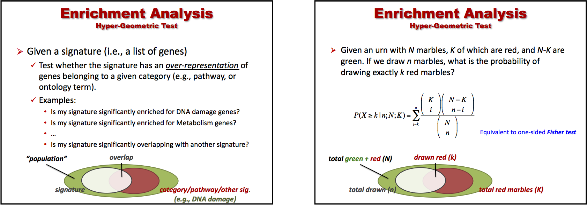

vignettes/docs/HyperEnrichment.Rmd
HyperEnrichment.RmdHere, we show the use of the hyper-geometric distribution to test for enrichment of a (biologically relevant) category (e.g., a pathway) in a differential gene expression signature. We will show the use of the functions phyper and fisher.test. We will then show the definition of a simple script to perform “hyper-enrichment” across multiple categories/pathways.
Recall the set-up from the slides (BS831_class05_ComparativeEnrichment.pptx). 
We start by loading the package containing the hyperEnrichment script.
We start by loading the code containing the hyperEnrichment scripts.
## GeneSet Object containing: 1320 gene sets
# show the size of the first 10 genesets
sapply(getGeneSet(hyperGsets)[1:10],length)## KEGG_GLYCOLYSIS_GLUCONEOGENESIS
## 62
## KEGG_CITRATE_CYCLE_TCA_CYCLE
## 32
## KEGG_PENTOSE_PHOSPHATE_PATHWAY
## 27
## KEGG_PENTOSE_AND_GLUCURONATE_INTERCONVERSIONS
## 28
## KEGG_FRUCTOSE_AND_MANNOSE_METABOLISM
## 34
## KEGG_GALACTOSE_METABOLISM
## 26
## KEGG_ASCORBATE_AND_ALDARATE_METABOLISM
## 25
## KEGG_FATTY_ACID_METABOLISM
## 42
## KEGG_STEROID_BIOSYNTHESIS
## 17
## KEGG_PRIMARY_BILE_ACID_BIOSYNTHESIS
## 16## control.UP control.DN TAZ.UP TAZ.DN YAP.UP YAP.DN TAZ+YAP.UP
## 11 23 41 35 356 470 166
## TAZ+YAP.DN DPAGT1.UP DPAGT1.DN
## 381 70 199
# let's rename the signatures
names(hyperSig) <- gsub("UP","REPRESSED",gsub("DN","ACTIVATED",names(hyperSig)))The genesets (the categories) represent a subset of the genesets contained in the MSgigDB’s c2.cp compendium. The signatures represent the up- and down-regulated genes in oral cancer cell lines where one of several regulators (TAZ, YAP, TAZ/YAP, DPAGT1) was knocked down (KD).
For example, the “YAP” signature was obtained by performing differential analysis on a 6-sample datasets corresponding to “knockdown vs. control” (3 vs. 3) experiments performed on the HSC3 oral cancer cell line. The genes significantly down-regulated (up-regulated) upon knockdown represent the genes assumed to be activated (repressed) by TAZ.
phyper
We first test for enrichment of a single geneset in a single signature using the function phyper (the cumulative function of the hyper-geometric distribution). The background population is set to 23,467, which represents the number of annotated genes in the dataset used to derive the differential signature.
## background population
backpop <- 23467
## let us extract the signature of YAP-activated genes
signature <- hyperSig$YAP.ACTIVATED
## and a REACTOME pathway
pathway <- getGeneSet(hyperGsets)[["REACTOME_TRANSCRIPTION"]]
## let's check the overlap (if any)
print( overlap <- length(intersect(signature,pathway)) )## [1] 17## function (q, m, n, k, lower.tail = TRUE, log.p = FALSE)
## NULL
## let us apply the function to our data (see figure)
phyper( q=overlap-1, # number of red marbles in the draw - 1 (see below)
m=length(pathway), # number of red marbles in urn
n=backpop-length(pathway), # number of green marbles in urn
k=length(signature), # Number of drawn marbles
lower.tail=FALSE) # compute P( X > overlap ), hence the '-1' above## [1] 1.262929e-06Clearly, the category (pathway) “REACTOME_TRANSCRIPTOME” is highly significantly enriched in the signature of YAP-activated genes.
fisher.test
We then show how we can obtain equivalent results using the fisher.test function. We first need to properly fill-in a contingency table, and then apply the function.
## we need to define the contingency table
##
## | DRAWN !DRAWN | TOT
## ------+----------------+----
## GREEN | k-q n-m-k+q | n-m
## RED | q m-q | m
## ------+----------------+----
## TOT | k n-k | n
contable <- matrix(c(
dg=length(signature)-overlap,
dr=overlap,
ng=backpop-length(signature)-length(pathway)+overlap,
nr=length(pathway)-overlap),2,2,dimnames=list(c("GREEN","RED"),c("DRAWN","not DRAWN")))
print(contable)## DRAWN not DRAWN
## GREEN 453 22804
## RED 17 193
fisher.test(contable,alt="less")##
## Fisher's Exact Test for Count Data
##
## data: contable
## p-value = 1.263e-06
## alternative hypothesis: true odds ratio is less than 1
## 95 percent confidence interval:
## 0.0000000 0.3632734
## sample estimates:
## odds ratio
## 0.2255642As you can see, the p-value is the same (p=1.263e-06).
We here define a (relatively) simple function, hyperEnrichment, to run hyper-geometric-based enrichment tests on multiple signatures and mutiple genesets.
## defined in CBMRtools
print(hyperEnrichment)## function
## (
## drawn, # one or more sets of 'drawn' items (e.g., genes). Basically, a list of signatures.
## categories, # gene sets (list of gene sets)
## ntotal=length(unique(unlist(categories))),
## # background population, i.e., the total no. of items from which
## # ..items are supposed to have been drawn
## min.drawsize=4, # min no. of drawn items that must be among categories' items
## mht=TRUE, # correct for MHT across multiple 'draws'
## verbose=TRUE
## )
## {
## ## checks on inputs
## ##
## if (!is(categories, "list") ) {
## stop( "categories expected to be a list of gene sets" )
## }
## gene.names<-unique(unlist(categories))
## if ( is.list(drawn) && is.null(names(drawn)) ) {
## stop( "drawn must have non-null names when a list" )
## }
## if ( ntotal<length(unique(unlist(categories)))) {
## warning( "background population's size less than unique categories' items: ", ntotal,"<",length(gene.names))
## }
## ##
## ## end checks
##
## cnames <-
## c("pval","fdr","set annotated","set size","category annotated","total annotated","category","hits")
##
## ## handling of multiple 'draws'
## ##
## if ( is.list(drawn) )
## {
## ncat <- length(categories)
## enrich <- matrix(NA,ncat*length(drawn),length(cnames)+1)
##
## VERBOSE(verbose,"Testing",length(drawn),"drawsets on",ncat,"categories and",
## length(gene.names),"total items ..\n")
##
## percent <- 0.1
## base <- 0
## ntst <- 0
## for ( i in 1:length(drawn) )
## {
## VERBOSE(verbose,"*** Testing", names(drawn)[i], ".. " )
## dset <- drawn[[i]]
## tmp <- hyperEnrichment(dset,categories,ntotal=ntotal,verbose=verbose)
## if (is.null(tmp)) {
## VERBOSE(verbose,"not enough items drawn\n")
## next
## }
## ntst <- ntst+1
## rng <- (base+1):(base+ncat)
## if (any(!is.na(enrich[rng,]))) stop( "something wrong")
##
## enrich[rng,] <- cbind(set=rep(names(drawn)[i],ncat),tmp)
## base <- base+ncat
## if (F && i>=round(length(drawn)*percent)) {
## VERBOSE(verbose, round(100*percent),"% ",sep="")
## percent <- percent+0.1
## }
## VERBOSE(verbose," (min fdr: ", signif(min(as.numeric(tmp[,"fdr"])),2),")\n",sep="")
## }
## VERBOSE(verbose,"done.\n")
## colnames(enrich) <- c("set",cnames)
##
## enrich <- enrich[1:base,,drop=F]
## if (mht) {
## VERBOSE(verbose,"MHT-correction across multiple draws ..")
## enrich[,"fdr"] <- pval2fdr(as.numeric(enrich[,"pval"]))
## VERBOSE(verbose,"done.\n")
## }
## VERBOSE(verbose,
## "Categories tested: ",rjust(length(categories),4),"\n",
## "Candidate sets: ",rjust(length(drawn),4),"\n",
## "Sets tested: ",rjust(ntst,4),"\n",
## "Items tested: ",rjust(sum(sapply(drawn,length)),4)," (min,med,max: ",
## paste(quantile(sapply(drawn,length),probs=c(0,.5,1)),collapse=","),")\n",
## "N(FDR<=0.25): ",rjust(sum(enrich[,"fdr"]<=.25),4),"\n",
## "N(FDR<=0.05): ",rjust(sum(enrich[,"fdr"]<=.05),4),"\n",
## "N(FDR<=0.01): ",rjust(sum(enrich[,"fdr"]<=.01),4),"\n",
## sep="")
## return(enrich)
## }
## ## handling of a single draw
## ##
## m.idx<-drawn[drawn %in% gene.names]
##
## if ( length(m.idx)<min.drawsize ) {
## VERBOSE(verbose,"insufficient annotated genes in the drawn set: ",
## paste(gene.names[m.idx],collapse=","),"\n")
## return(NULL)
## }
## VERBOSE(verbose,length(m.idx),"/",length(drawn), " annotated genes found",sep="")
##
## nhits <-sapply(categories, function(x,y) length(intersect(x,y)), m.idx)
## ndrawn <- length(drawn) # length(m.idx)
## ncats <- sapply(categories,length)
## nleft <- ntotal-ncats
##
## ## compute P[X>=nhits]
## enrich <- phyper(q=nhits-1,m=ncats,n=nleft,k=ndrawn,lower.tail=F)
## enrich <- cbind(pval=enrich,
## fdr=pval2fdr(enrich),
## nhits=nhits,
## ndrawn=ndrawn,
## ncats=ncats,
## ntot=ntotal,
## category=names(categories))
##
## enrich <- cbind(enrich,
## hits=sapply(categories,function(x,y)paste(intersect(x,y),collapse=','),m.idx))
## ord <- order(as.numeric(enrich[,"pval"]))
## enrich <- enrich[ord,,drop=F]
## enrich[,"pval"] <- signif(as.numeric(enrich[,"pval"]),2)
## enrich[,"fdr"] <- signif(as.numeric(enrich[,"fdr"]),2)
##
## colnames(enrich) <- cnames
## rownames(enrich) <- names(categories)[ord]
##
## return(enrich)
## }
## <environment: namespace:BS831>We then apply it to the list of oral cancer knockdown signatures and two MSigDB geneset compendia, the set of canonical pathways c2.cp and a set of hallmark genesets h.all [Liberzon et al., 2015].
library(openxlsx)
hyperE <- hyperEnrichment(drawn=hyperSig,categories=getGeneSet(hyperGsets),ntotal=backpop) ## Testing 10 drawsets on 1320 categories and 8428 total items ..
## *** Testing control.REPRESSED .. 4/11 annotated genes found (min fdr: 1)
## *** Testing control.ACTIVATED .. 8/23 annotated genes found (min fdr: 0.057)
## *** Testing TAZ.REPRESSED .. 15/41 annotated genes found (min fdr: 1)
## *** Testing TAZ.ACTIVATED .. 17/35 annotated genes found (min fdr: 1)
## *** Testing YAP.REPRESSED .. 164/356 annotated genes found (min fdr: 1.5e-15)
## *** Testing YAP.ACTIVATED .. 261/470 annotated genes found (min fdr: 4.4e-86)
## *** Testing TAZ+YAP.REPRESSED .. 60/166 annotated genes found (min fdr: 0.24)
## *** Testing TAZ+YAP.ACTIVATED .. 186/381 annotated genes found (min fdr: 2.4e-26)
## *** Testing DPAGT1.REPRESSED .. 15/70 annotated genes found (min fdr: 1)
## *** Testing DPAGT1.ACTIVATED .. 67/199 annotated genes found (min fdr: 0.32)
## done.
## MHT-correction across multiple draws ..done.
## Categories tested: 1320
## Candidate sets: 10
## Sets tested: 10
## Items tested: 1752 (min,med,max: 11,118,470)
## N(FDR<=0.25): 130
## N(FDR<=0.05): 67
## N(FDR<=0.01): 41
head(hyperE)## set pval fdr set annotated set size
## [1,] "control.REPRESSED" "0.0051" "0.278181818181818" "1" "11"
## [2,] "control.REPRESSED" "0.0056" "0.29568" "1" "11"
## [3,] "control.REPRESSED" "0.0098" "0.45993031358885" "1" "11"
## [4,] "control.REPRESSED" "0.012" "0.52624584717608" "1" "11"
## [5,] "control.REPRESSED" "0.012" "0.52624584717608" "1" "11"
## [6,] "control.REPRESSED" "0.014" "0.586666666666667" "1" "11"
## category annotated total annotated
## [1,] "11" "23467"
## [2,] "12" "23467"
## [3,] "21" "23467"
## [4,] "25" "23467"
## [5,] "25" "23467"
## [6,] "29" "23467"
## category
## [1,] "PID_ALK2PATHWAY"
## [2,] "REACTOME_CS_DS_DEGRADATION"
## [3,] "REACTOME_CHONDROITIN_SULFATE_BIOSYNTHESIS"
## [4,] "PID_TOLL_ENDOGENOUS_PATHWAY"
## [5,] "REACTOME_A_TETRASACCHARIDE_LINKER_SEQUENCE_IS_REQUIRED_FOR_GAG_SYNTHESIS"
## [6,] "PID_INTEGRIN2_PATHWAY"
## hits
## [1,] "BMP7"
## [2,] "BGN"
## [3,] "BGN"
## [4,] "BGN"
## [5,] "BGN"
## [6,] "SPON2"
hyperE.fdr25 <- hyperE[hyperE[,'fdr']<=0.25,]
head(hyperE.fdr25)## set pval fdr set annotated set size
## [1,] "control.ACTIVATED" "4.3e-05" "0.00423582089552239" "3" "23"
## [2,] "control.ACTIVATED" "0.00037" "0.0299631901840491" "2" "23"
## [3,] "control.ACTIVATED" "0.00097" "0.0692108108108108" "2" "23"
## [4,] "control.ACTIVATED" "0.0033" "0.195336322869955" "2" "23"
## [5,] "control.ACTIVATED" "0.0034" "0.199466666666667" "2" "23"
## [6,] "TAZ.REPRESSED" "0.0012" "0.0812307692307692" "2" "41"
## category annotated total annotated
## [1,] "70" "23467"
## [2,] "29" "23467"
## [3,] "47" "23467"
## [4,] "88" "23467"
## [5,] "89" "23467"
## [6,] "29" "23467"
## category hits
## [1,] "PID_AP1_PATHWAY" "FOSL1,ETS1,CSF2"
## [2,] "PID_TCRCALCIUMPATHWAY" "FOSL1,CSF2"
## [3,] "PID_NFAT_TFPATHWAY" "FOSL1,CSF2"
## [4,] "KEGG_HEMATOPOIETIC_CELL_LINEAGE" "IL1R2,CSF2"
## [5,] "WNT_SIGNALING" "FOSL1,WNT5A"
## [6,] "REACTOME_DEGRADATION_OF_THE_EXTRACELLULAR_MATRIX" "MMP1,MMP13"
## let us save it as a '.xlsx' object for you to inspect
write.xlsx(hyperE.fdr25, file=file.path(system.file("extdata", package="BS831"), "hyperE.fdr25.xls"))Let’s load a different geneset compendium (hallmark genesets)
HALL <- new("GeneSet", file.path(system.file("extdata", package="BS831"), "h.all.v6.1.symbols.gmt"))
# show the size of the first 10 genesets
sapply(getGeneSet(HALL)[1:10],length)## HALLMARK_TNFA_SIGNALING_VIA_NFKB HALLMARK_HYPOXIA
## 200 200
## HALLMARK_CHOLESTEROL_HOMEOSTASIS HALLMARK_MITOTIC_SPINDLE
## 74 200
## HALLMARK_WNT_BETA_CATENIN_SIGNALING HALLMARK_TGF_BETA_SIGNALING
## 42 54
## HALLMARK_IL6_JAK_STAT3_SIGNALING HALLMARK_DNA_REPAIR
## 87 150
## HALLMARK_G2M_CHECKPOINT HALLMARK_APOPTOSIS
## 200 161
hyperHALL <- hyperEnrichment(drawn=hyperSig,categories=getGeneSet(HALL),ntotal=backpop)## Testing 10 drawsets on 50 categories and 4386 total items ..
## *** Testing control.REPRESSED .. insufficient annotated genes in the drawn set: NA
## not enough items drawn
## *** Testing control.ACTIVATED .. 12/23 annotated genes found (min fdr: 0.048)
## *** Testing TAZ.REPRESSED .. 14/41 annotated genes found (min fdr: 0.25)
## *** Testing TAZ.ACTIVATED .. 15/35 annotated genes found (min fdr: 0.032)
## *** Testing YAP.REPRESSED .. 135/356 annotated genes found (min fdr: 2.5e-37)
## *** Testing YAP.ACTIVATED .. 199/470 annotated genes found (min fdr: 7.4e-77)
## *** Testing TAZ+YAP.REPRESSED .. 45/166 annotated genes found (min fdr: 0.0023)
## *** Testing TAZ+YAP.ACTIVATED .. 151/381 annotated genes found (min fdr: 1.4e-26)
## *** Testing DPAGT1.REPRESSED .. 16/70 annotated genes found (min fdr: 0.076)
## *** Testing DPAGT1.ACTIVATED .. 51/199 annotated genes found (min fdr: 0.0028)
## done.
## MHT-correction across multiple draws ..done.
## Categories tested: 50
## Candidate sets: 10
## Sets tested: 9
## Items tested: 1752 (min,med,max: 11,118,470)
## N(FDR<=0.25): 80
## N(FDR<=0.05): 34
## N(FDR<=0.01): 15
hyperHALL.fdr25 <- hyperHALL[hyperHALL[,'fdr']<=0.25,]
head(hyperHALL.fdr25)## set pval fdr set annotated set size
## [1,] "control.ACTIVATED" "0.00095" "0.01425" "3" "23"
## [2,] "control.ACTIVATED" "0.0033" "0.0353571428571429" "2" "23"
## [3,] "control.ACTIVATED" "0.0054" "0.0514285714285714" "2" "23"
## [4,] "control.ACTIVATED" "0.016" "0.10625" "2" "23"
## [5,] "control.ACTIVATED" "0.016" "0.10625" "2" "23"
## [6,] "control.ACTIVATED" "0.016" "0.10625" "2" "23"
## category annotated total annotated category
## [1,] "200" "23467" "HALLMARK_TNFA_SIGNALING_VIA_NFKB"
## [2,] "87" "23467" "HALLMARK_IL6_JAK_STAT3_SIGNALING"
## [3,] "113" "23467" "HALLMARK_UNFOLDED_PROTEIN_RESPONSE"
## [4,] "200" "23467" "HALLMARK_HYPOXIA"
## [5,] "200" "23467" "HALLMARK_MYOGENESIS"
## [6,] "200" "23467" "HALLMARK_IL2_STAT5_SIGNALING"
## hits
## [1,] "FOSL1,BTG3,CSF2"
## [2,] "IL1R2,CSF2"
## [3,] "CHAC1,STC2"
## [4,] "STC2,ETS1"
## [5,] "CHRNB1,STC2"
## [6,] "CSF2,IL1R2"